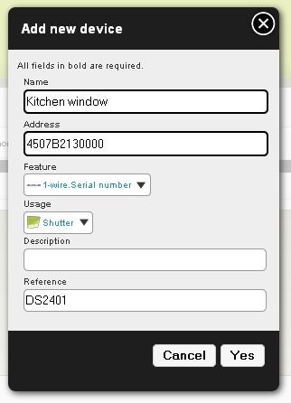

Set up your devices¶
Purpose¶
Now that you have configured your plugin(s), you can link devices to this (these) plugin(s) and put them to a place in your house.
Creating a device¶
Note
Detailed insctructions about creating, updating and deleting devices can be found on the Devices management page.
First, create your device in the administration panel : Organization > Devices. Be careful to indicate a valid device address and the corresponding feature.
Right now there is no auto discovery feature in Domogik to help you to find out a device address. In some plugins there are helpers which can display available modules and their addresses. Feel free using them.
Set devices to a place¶
To set devices to a place, you must be on the visualisation screen. From Home Screen, click on Visualisation to go to your house’s visualisation screen. For each area and room, it will be the same process to set devices.
Go to the edition mode¶
On the Visualisation menu, there is a Customize button. Clicking on it will open the edition mode which will allow you to set devices to places.

You may also access edition mode from the Administration panel : go to Organization > Widgets menu and you will see the list of all available places. Just click on one place to go to the edition mode.

Screen description¶
When clicking on a feature you will see black squares reprensenting the widget. In this mode you won’t see the widget appearance but only the size it takes on the screen. A place area is separated in 3 sub-areas:
- Title widget zone (1) : here you can put only one 1x1 widget. It is commonly use to put a sensor device.
- Main widgets zone (2) : here, you can put up to four 1x1 widgets (only 1x1 widgets are allowed here for the moment). In visualisation mode, this zone will be seen from higher zone visualisation screen.
- Other widgets zone (3) : here you can put widgets you want to use/see for this place but that are less important.
A window named Place your widgets has been opened. In the first column, you will have to choose a device. Then in the second column all features related to this device appear. Select one feature : on the third column, available widgets for this device/feature are displayed. Select one widget. Then, in the fourth column, you see a preview/description of the widget. Juste drag on the black representation of the widget (window disappears) and drop it to the place you want to put it on.

If you close this window, you can reopen it by cliking on Widgets in the menubar :

To delete a widget, just click on the red cross of the widget :

When you have finished to set your widgets, click on Finish button (top right of the window) to validate your choice.

You come back to the visualisation mode : your widgets are now ready to use.